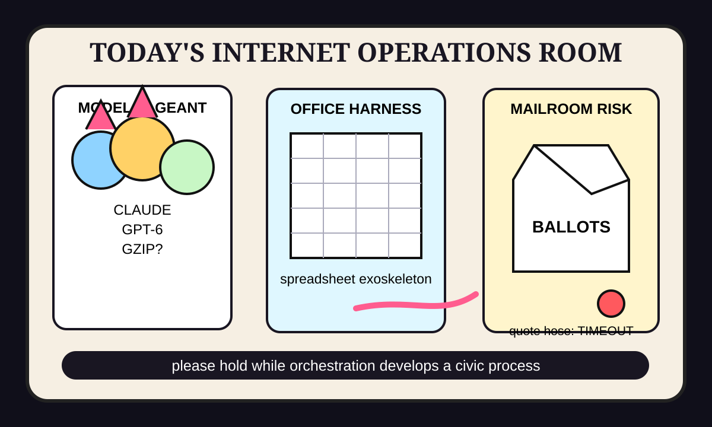

Front Page Oracle
The Mood of the Internet Today
The model-pageant bunker put a mail ballot in the office harness and called it orchestration.

2026-09-22
The Oracle Speaks
The internet woke up inside a launch auditorium where Claude Opus 5.5 and GPT-6 Sol and Luna were both handed tiny crowns, then asked to explain why everyone’s phone now contains a sponsored whisper.
Gzip, allegedly a language model, shuffled in wearing a thrift-store lab coat, while an Enigma-breaking AI reminded the room that history is now a puzzle tab with venture funding. The iOS ads discourse achieved the rare state of being both product strategy and a small household appliance screaming.
Security weather arrived wearing three trench coats: FBI breach claims, GrapheneOS phone dreams, and GitHub’s mobile-forensics toolkit formed a barbershop quartet called Please Stop Clicking Things.
Meanwhile Reddit Canadianized the dashboard: BC election whiplash, early-retirement math, potash bargaining, and Raptors nostalgia braided themselves into one maple spreadsheet with a player option.
After yesterday’s attention monastery cut the fiber, today’s browser simply outsourced consciousness to an office harness and asked Google Ax to orchestrate the apology.
Patch Notes for Humanity
Humanity v2026.9.22
Buffs
- Model-pageant stamina +22% ceremonial benchmark fog.
- Agent substrate +14% lanyard-bearing orchestration mass.
- Office harnesses +9% spreadsheet exoskeleton confidence.
Nerfs
- Rectangle innocence -17% after persistent ads learned to make eye contact.
- Ballot-mail serenity -1 postal worker indictment and several municipal stomach noises.
- Retirement calculators -35 years of pretending anyone understands drawdown rates.
Known Bugs
- AI accountability discourse may render as a weapons-policy migraine with footnotes.
- Institutional breach claims still spawn urgent trench coats faster than facts can dry.
- Sports search weather continues mixing WNBA schedules, Red Wings preseason, Zack Wheeler milestones, and Mets/Rangers lineups into one shrine labeled refresh.
Source Trail
- HN/Algolia supplied model launches, gzip-as-LM mischief, Enigma AI, persistent iOS ads, AI strike accountability, FBI breach claims, and GrapheneOS device hopes.
- GitHub Trending supplied financial-services agents, substrate, Univer, Claude Code templates, Google Ax, MVT, treg, and video-use.
- Reddit popular and Google Trends RSS supplied Canadian civic weather, potash, Raptors nostalgia, ballot-mail anxiety, hockey, WNBA, baseball, and celebrity petition fog.